collaborators
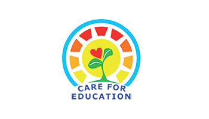
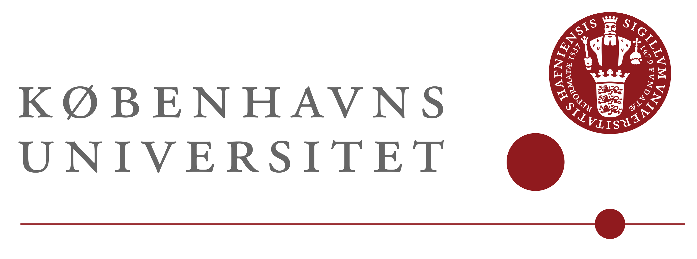

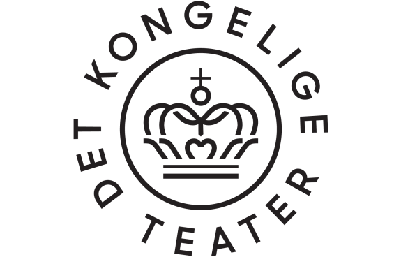
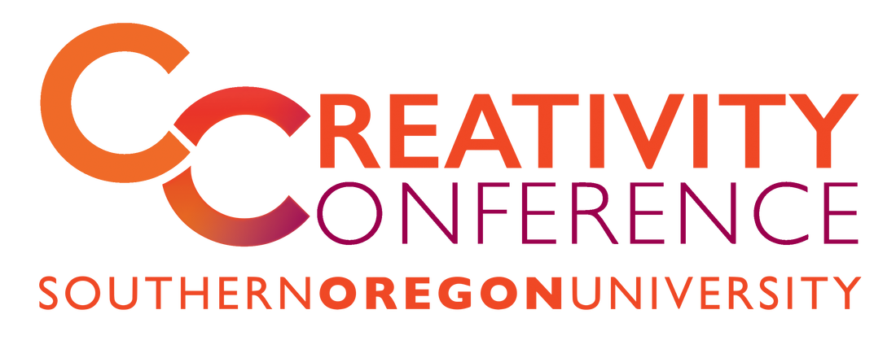

we design the moments between your sessions, the spaces where delegates actually connect, the activities that make your conference impossible to forget. integrity-first. evidence-backed. playfully serious.
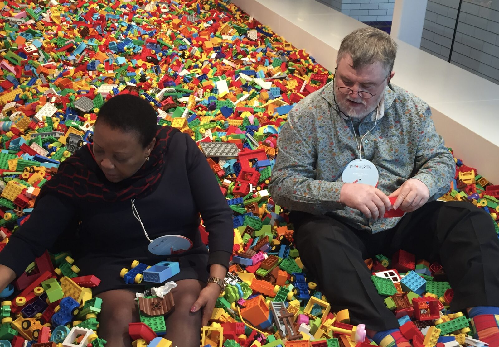
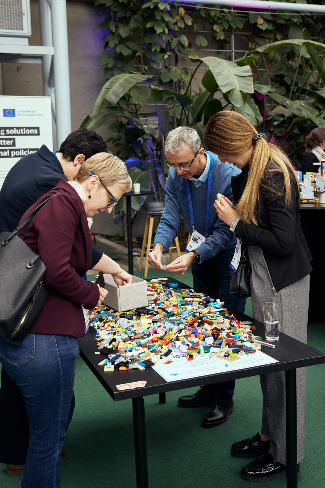
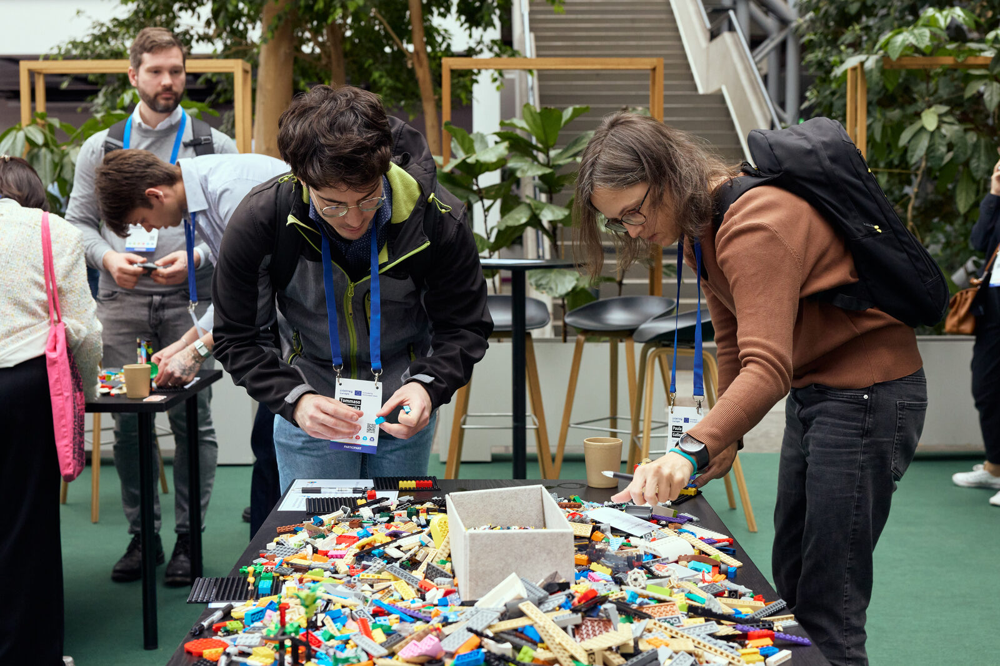
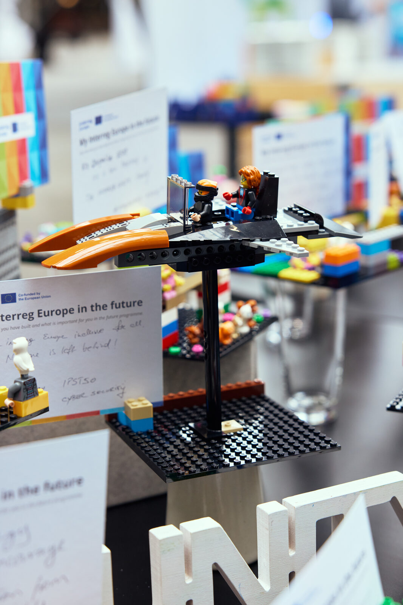
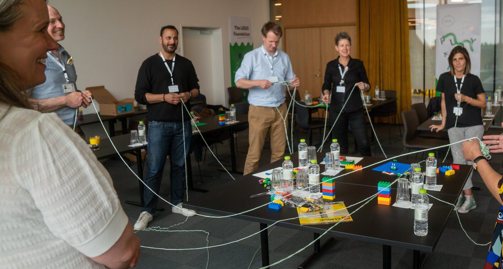
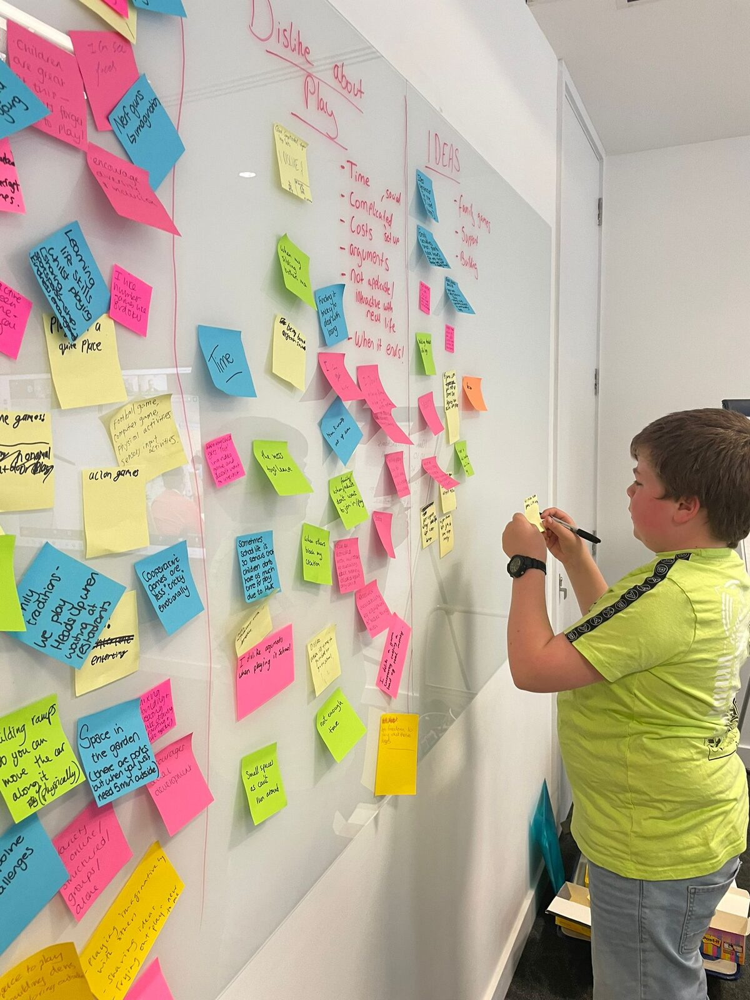
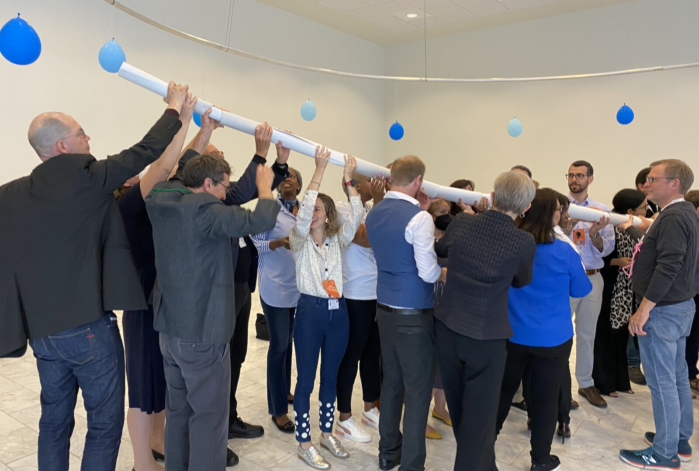
conferences spend millions on content that delegates forget in a week. we redesign the architecture around the content, so it sticks, transfers, and travels home.
and when work feels like play, organisations measure +40% job satisfaction, +25% stronger team connection, and −15% burnout.
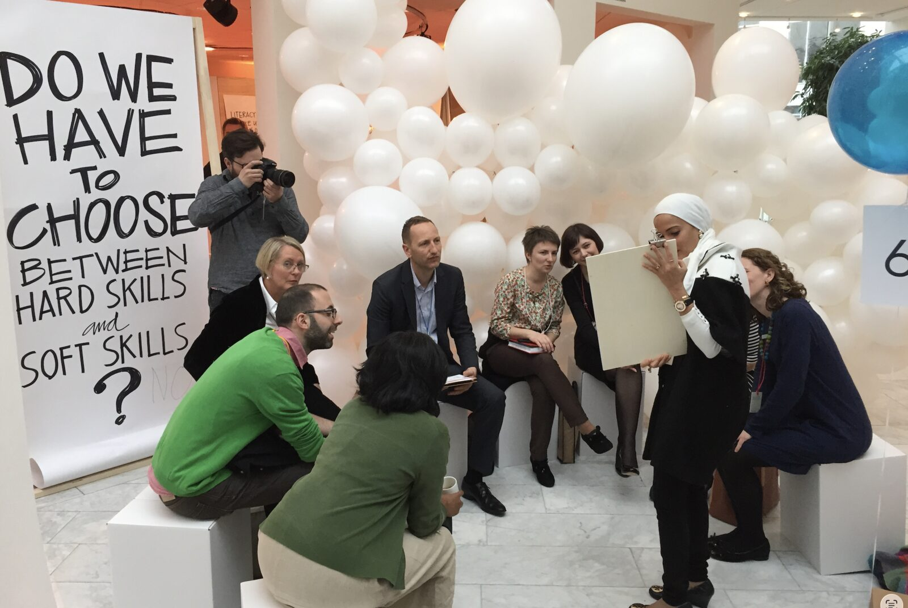
different buyers, different decision-makers, the same problem: the format hasn't kept up with what delegates expect. we adapt to each.
research, peer review, scholarly societies. we help your sessions move from one-way reading to genuine dialogue, without compromising rigour. PRME Global Forum, Academy of Management, Education World Forum, ECD Summit.
trade shows, vendor convenings, sector summits. we design the experiences that drive booth traffic, generate qualified conversations, and give sponsors the ROI they paid for.
internal summits, leadership retreats, all-hands. we build the conditions for genuine alignment, surface the conversations that don't happen in regular meetings, and send delegates home ready to act.
we don't ask organisers to redesign everything at once. trust gets built in proof points. start small, scale once you've seen what's possible.
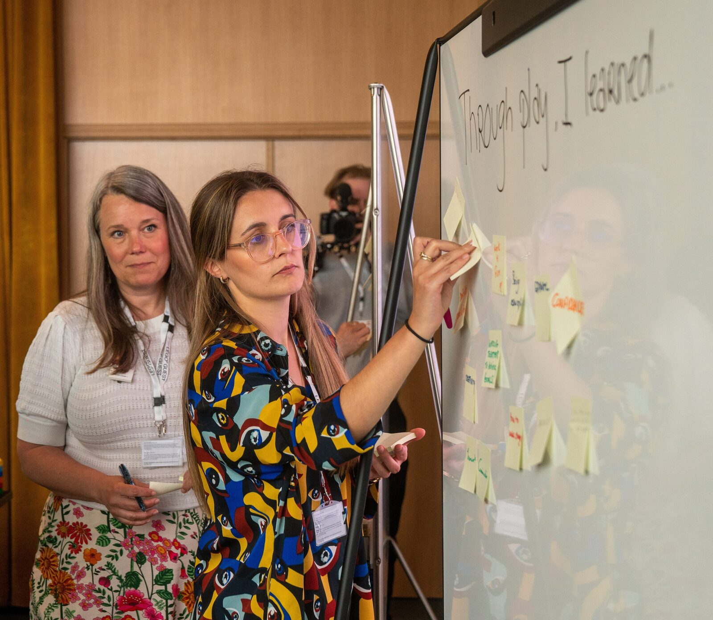
delegates leave with names, ideas, and intentions. we make sure those don't evaporate on the flight home. the half-life of your event is where the real ROI lives.
we visualise the connections delegates made on the day, so they can pick up the threads weeks later.
a companion environment for resources, ongoing prompts, and post-event reflection. learning that doesn't end when the event does.
specific, practical artefacts delegates can use in their own organisations the following Monday. the conference value extends for six months.
we co-create meaningful conferences with AI, not in spite of it. our team brings the theory, experience, and skill that AI outputs need to land, so your delegates walk away with something real instead of a clever recap.





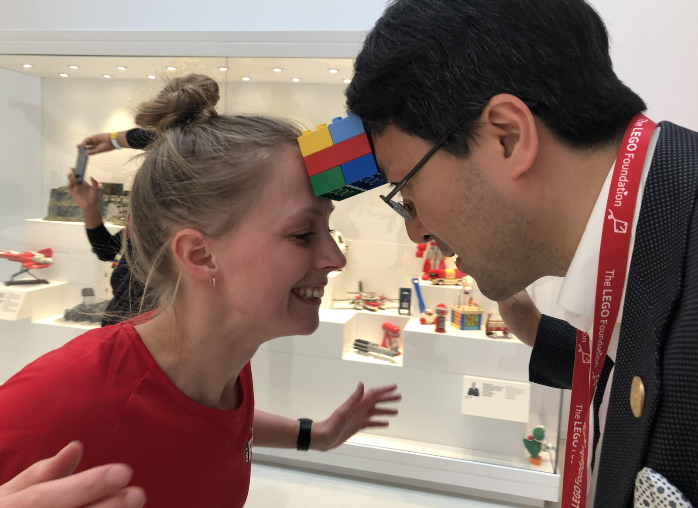
winded.vertigo + press play together = decades across the LEGO Foundation, UN Global Compact, Inter-American Development Bank, UNICEF, ministries, royal theatres, and a $20M global Play for All accelerator. this is who shows up.
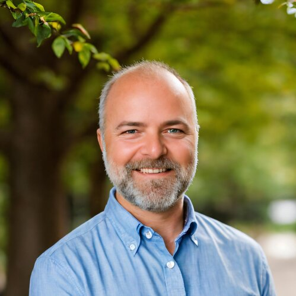
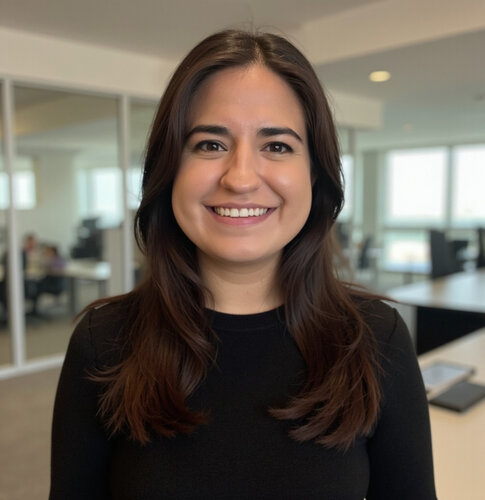
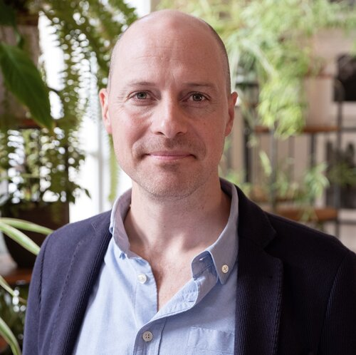
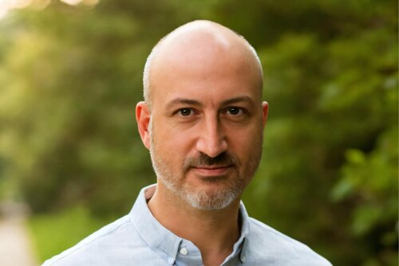
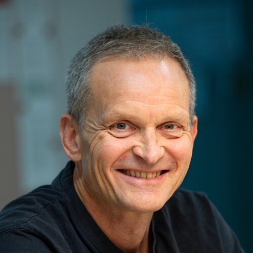
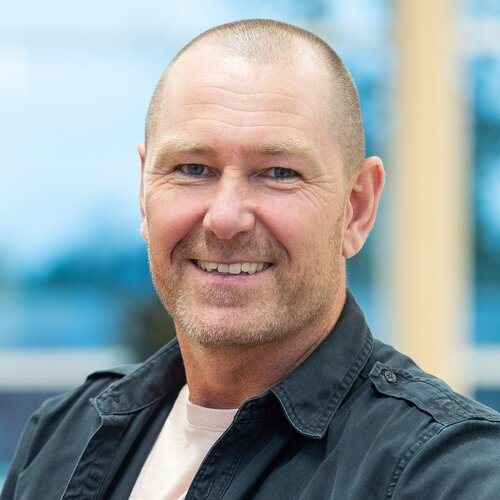
book a free playdate with both teams. no pitch deck, no slides. just a conversation about your next conference and what could change about it.
book your playdate